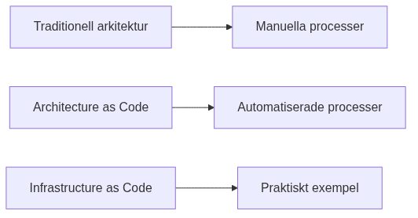
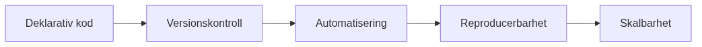
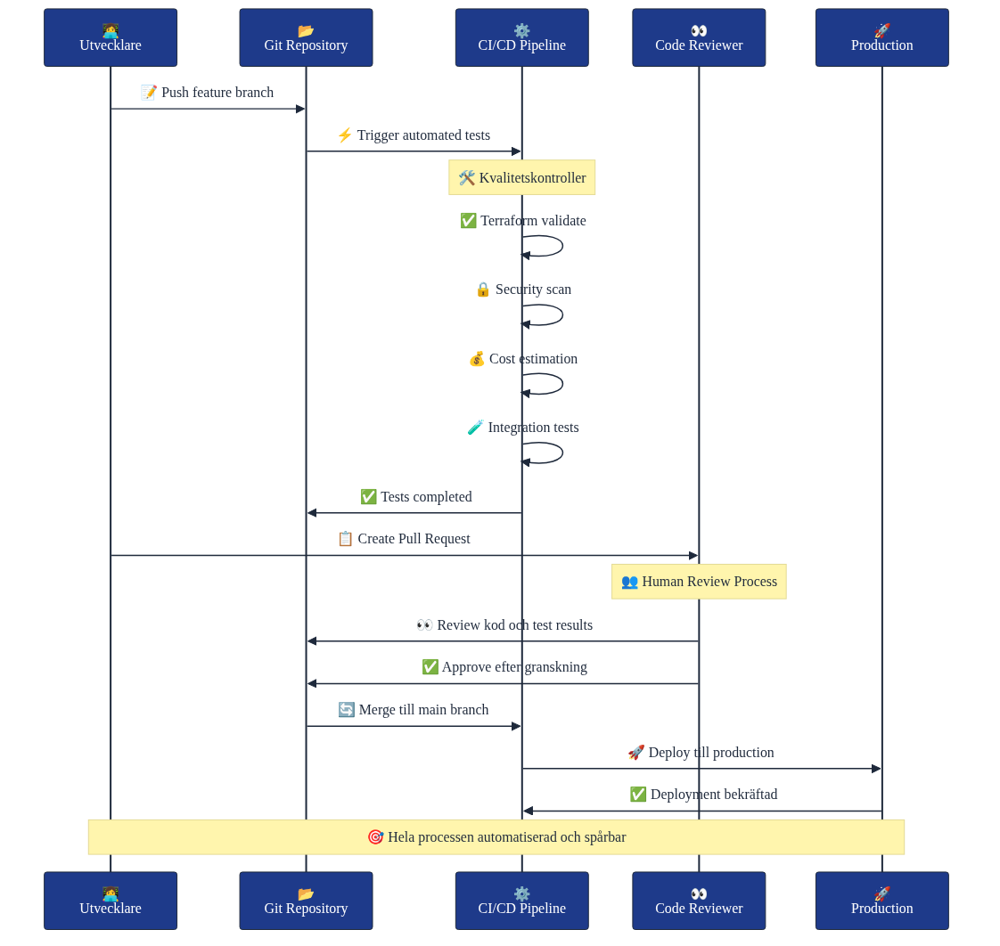

Shows the progression from traditional manual processes to modern Architecture as Code, with Infrastructure as Code as a practical example.
Illustrates the fundamental principles of Architecture as Code, from declarative code through to scalability benefits.
Demonstrates a professional development workflow with branching strategy, quality gates, and deployment pipeline.
Professional sequence diagram showing the complete code review and deployment process with quality controls.
